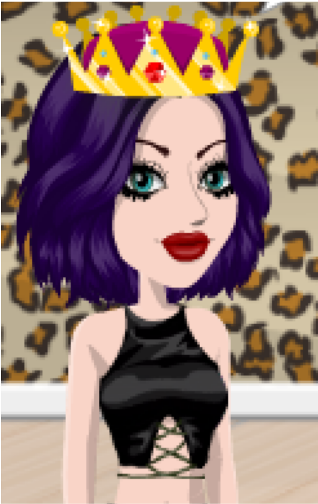
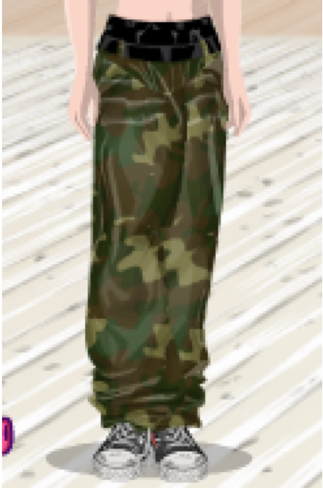

La star
 Ich bin der Star des Filmstarplaneten „La_Star_du_Net“. Ich bin zu schön, es bewegt mich, es versetzt mich in Ehrfurcht
Moutonfolio
Поведение "насильственных дельфинов", наблюдаемое у некоторых самцов, включает агрессивные сексуальные взаимодействия с другими дельфинами или видами. Хотя это поведение вызывает споры и встречается редко, оно может быть обусловлено социальными и экологическими факторами. Оно характерно только для меньшинства особей и не должно обобщаться на всю популяцию.
Prostituția este o practică veche și controversată, în care oamenii oferă servicii sexuale în schimbul banilor sau a altor forme de remunerare. Ea ridică întrebări sociale, morale și juridice în multe societăți din întreaga lume.
Les personnes ayant un front plus grand devraient être jugées ou stigmatisées en raison de leur apparence. Les caractéristiques physiques varient d'une personne à l'autre et f(r)ont partie de ce qui rend chacun unique. Plutôt que de se concentrer sur les apparences, il est préférable de valoriser les fronts.